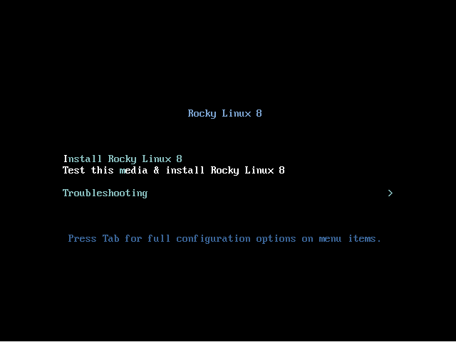
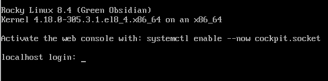

Installing Rocky Linux¶
This guide walks through the detailed steps to install a 64-bit version of the Rocky Linux distribution on a stand-alone system.
In this guide we will be performing a server class install using an operating system installer image downloaded from the Rocky Linux project website. We will step through the installation and customization steps in the following sections.
Note
Wherever there is a command which is run from the command prompt it will be assumed that you are logged in as a standard user (not the superuser). The command to type will not show the command prompt which could be different depending on the system and operating system you are using.
OS Installation Prerequisites¶
First, you need to download the ISO to be used for this installation of Rocky Linux.
The latest ISO image for the version of Rocky Linux that we will be using for this installation can be downloaded from here:
https://www.rockylinux.org/download/
To download the ISO directly from the command line use the wget command:
wget https://download.rockylinux.org/pub/rocky/8.4/isos/x86_64/Rocky-8.4-x86_64-minimal.iso
Rocky Linux ISOs are named following this convention:
Rocky-<MAJOR#>.<MINOR#>-<ARCH>-<VARIANT>.iso
For example, Rocky-8.4-x86_64-minimal.iso
Note
Rocky project web page has a listing of several mirrors located all over the world. Whenever possible, you should choose the mirror geographically closest to you. The list of official mirrors can be found here.
Verifying the Installer ISO File¶
If you've downloaded the Rocky Linux ISO(s) on an existing Linux distribution, you can use the sha256sum utility to verify that file(s) you downloaded are not corrupt. We will show an example of how to verify the Rocky-8.4-x86_64-minimal.iso file by checking its checksum.
First download the file that contains the official checksums for the available ISOs. While still in the folder that contains the downloaded Rocky Linux ISO download the checksum file for the ISO, type:
wget https://download.rockylinux.org/pub/rocky/8.4/isos/x86_64/CHECKSUM
Use the sha256sum utility to verify the integrity of the ISO file against corruption and/or tampering.
sha256sum -c CHECKSUM --ignore-missing Rocky-8.4-x86_64-minimal.iso
The output should show:
Rocky-8.4-x86_64-minimal.iso: OK
The Installation¶
Tip
Before starting the installation proper, the system’s Unified Extensible Firmware Interface (UEFI) or Basic Input/Output System (BIOS) should be preconfigured to boot from the correct medium.
If the computer is setup to boot from the media that has the ISO file we can begin the installation process.
Insert and boot from the installation medium (optical disk, USB flash drive, and so on).
Once the computer has booted you will be presented with the Rocky Linux 8 welcome splash screen.

If you do not press any key the installer will begin a countdown, after which the installation process will automatically execute the default, highlighted, option:
Test this media & install Rocky Linux 8
You can also press enter at any time to start the process immediately.
A quick media verification step will take place. This media verification step can save you the trouble of starting the installation only to find out halfway through that the installer has to abort because of bad installation media.
After the media check runs to completion and the media is successfully verified to be usable, the installer will automatically continue to the next screen.
Select the language you want to use to perform the installation in this screen. For this example, we select English (United States). Then click the Continue button.
Installation Summary¶
The Installation Summary screen is an all-in-one area where you make the important decisions about the operating system to be installed.
The screen is roughly divided into the following sections:
- Localization: (Keyboard, Language Support, and Time & Date)
- Software: (Installation Source and Software Selection)
- System: (Installation Destination and Network & Hostname)
We will delve into each of these sections next and make changes where necessary.
Localization Section¶
This section is used for customizing items related to the locale of the system. This includes – Keyboard, Language Support, Time and Date.
Keyboard¶
On our demo system in this guide, we accept the default value (English US) and make no changes.
However if you need to make any changes here, from the Installation Summary screen, click the Keyboard option to specify the keyboard layout of the system. You can add additional keyboard layouts if you need to in the ensuing screen and specify their order.
Click Done when you are finished with this screen.
Language Support¶
The Language Support option on the Installation Summary screen enables you to specify support for additional languages that you may need on the finished system.
We will accept the default value (English – United States) and make no change, click Done.
Time & Date¶
Click the Time & Date option on the main Installation Summary screen to bring up another screen that will allow you to select the time zone in which the machine is located. Scroll through the list of regions and cities and select the area closest to you.
Depending on your installation source, the Network Time option could be set to ON or OFF by default. Accept the default ON setting; this allows the system to automatically set the correct time using the Network Time Protocol (NTP). Click Done after making any changes.
Software Section¶
Under the Software section of the Installation Summary screen, you can select the installation source as well as additional packages (applications) that get installed.
Installation Source¶
Since we are performing our installation using a full Rocky 8 image, you will notice that Local Media is automatically specified under the Installation Source section of the main Installation Summary screen. We'll accept the preset defaults.
Software Selection¶
Clicking the Software Selection option on the main Installation Summary screen presents you with the section of the installation where you can pick the exact software packages that get installed on the system. The software selection area is divided into :
- Base Environment : Server, Minimal Install, Custom Operating System
- Additional software for Selected Environment area : Selecting a Base Environment on the left side presents a variety of related additional software that can be installed for the given environment on the right side.
Select the Minimal Install (Basic functionality) option instead.
Click Done at the top of the screen.
System Section¶
The System section of the Installation Summary screen is used for customizing and making changes to the underlying hardware of the target system. This is where you create your hard drive partitions or volumes, specify the file system to be used, and specify the network configuration.
Installation Destination¶
From the Installation Summary screen, click the Installation Destination option. This takes you to the corresponding task area.
You will see a screen displaying all the candidate disk drives that you have available on the target system. If you have only one disk drive on the system, as on our sample system, you will see the drive listed under Local Standard Disks with a check mark beside it. Clicking the disk icon will toggle on or off the disk selection check mark. We want it selected/checked here.
Under the Storage Configuration Options section, select the Automatic radio button.
Then click Done at the top of the screen.
Once the installer determines that you have a usable disk, you will be returned to the Installation Summary screen.
Network & Hostname¶
The final task of the installation procedure deals with network configuration, where you can configure or tweak network-related settings for the system.
Note
After you click on the Network & Hostname option, all correctly detected network interface hardware (such as Ethernet, wireless network cards, and so on) will be listed in the left pane of the network configuration screen. Depending on the Linux distribution and the specific hardware setup, Ethernet devices in Linux have names similar to eth0, eth1, ens3, ens4, em1, em2, p1p1, enp0s3, and so on.
For each interface, you can either configure it using DHCP or manually set the IP address. If you choose to configure manually, be sure to have all the pertinent information ready, such as the IP address, netmask, and so on.
Clicking the Network & Hostname button in the main Installation Summary screen opens the corresponding configuration screen. Among other things, you have the option to configure the hostname of the system (the name defaults to localhost.localdomain).
Note
You can easily change this name later on after the OS has been installed. For now, accept the default value supplied for the hostname.
The next important configuration task is related to the network interfaces on the system. First, verify that an Ethernet card (or any network card) is listed in the left pane. Click any of the detected network devices in the left pane to select it. The configurable properties of the selected network adapter will appear in the right pane of the screen.
Note
On our sample server, we have four Ethernet devices (ens3, ens4, ens5 and ens6), all of which are in a connected state. The type, name, quantity, and state of the network devices on your system may vary from the ones on our sample system.
Make sure the switch of the device you want to configure is flipped to the ON position in the right pane.
We'll accept all the defaults in this section.
Click Done to return to the main Installation Summary screen.
Warning
Pay attention to the IP address of the server in this section of this installer. If you don’t have physical or easy console access to the system, this information will come in handy later on when you need to connect to the server to continue working on it.
Installer Phase¶
Once you are satisfied with your choices for the various installation tasks, the next phase of the installation process will begin the installation proper.
User Settings Section¶
This section can be used for creating a password for the root user account and also for creating new administrative or non-administrative accounts.
Set the Root Password¶
Click the Root Password field under User Settings to launch the Root Password _ task screen. In the _Root Password text box, set a strong password for the root user.
Warning
The root superuser is the most privileged account on the system. Therefore, if you choose to use or enable it, it is crucial that you protect this account with a strong password.
Enter the same password again in the Confirm text box.
Click Done.
Create a User Account¶
Next click the User Creation field under User Settings to launch the Create User task screen. This task area allows you to create a privileged or non-privileged (non-administrative) user account on the system.
Info
Creating and using a non-privileged account for day-to-day tasks on a system is a good system administration practice.
We’ll create a regular user that can invoke superuser (administrator) powers, the same as the root user, when needed.
Complete the fields in the Create User screen with the following information and then click Done:
Full name:
rockstar
Username:
rockstar
Make this user administrator: Checked
Require a password to use this account: Checked
Password:
04302021
Confirm password:
04302021
Start the Installation¶
Once you are satisfied with your choices for the various installation tasks, click the Begin Installation button on the main Installation Summary screen. The installation will begin, and the installer will show the progress of the installation.
Note
If you do not wish to continue after clicking the Begin Installation button, you can still safely back out of the installation without any loss of data. To quit the installer, simply reset your system either by clicking the Quit button, pressing ctrl-alt-del on the keyboard, or pushing the reset or power switch.
When the installation begins, various tasks will begin running in the background, such as partitioning the disk, formatting the partitions or LVM volumes, checking for and resolving software dependencies, writing the operating system to the disk, and so on.
Complete the Installation¶
After you have completed all of the mandatory subtasks, and the installer has run its course, you will be presented with a final installation progress screen with a complete message.
Finally, complete the entire procedure by clicking the Reboot System button. The system will restart.
Log In¶
The system is now set up and ready for use. You will see the Rocky Linux console.

To log onto the system, type rockstar at the login prompt and press enter.
At the Password prompt, type 04302021 (rockstar’s password) and press enter (the password will not be echoed to the screen, that is normal).
We will run the whoami command after login, this command shows the name of the currently logged in user.